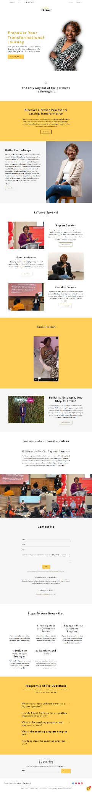

The challenge

← Back to Work
Speaker · Personal brand
Latonya Speaks
A speaker website has a few seconds to answer three questions: Who is this person? What can they speak about? How do I bring them into my event?
Platform usedPlatform not recorded
Project typeSpeaker · Personal brand
The story behind the build
A speaker website has only a few seconds to make the person, message and booking path clear.
Latonya Speaks needed to answer the questions an event organiser asks quickly: who is this speaker, what is the message, and how do I bring her into an event?
I built the story around that sequence instead of burying the important information inside a long biography. The speaker stays central, the message has its own space, and practical engagement information is easy to find.
The result is a personal-brand experience that supports both quick scanning and deeper reading while keeping the enquiry path obvious.
What I changed
- Keep the speaker and credibility central.
- Separate the message from practical engagement information.
- Make enquiry easy for organizers.
- Use a clear hierarchy that works for both quick scanning and deeper reading.
Where it ended